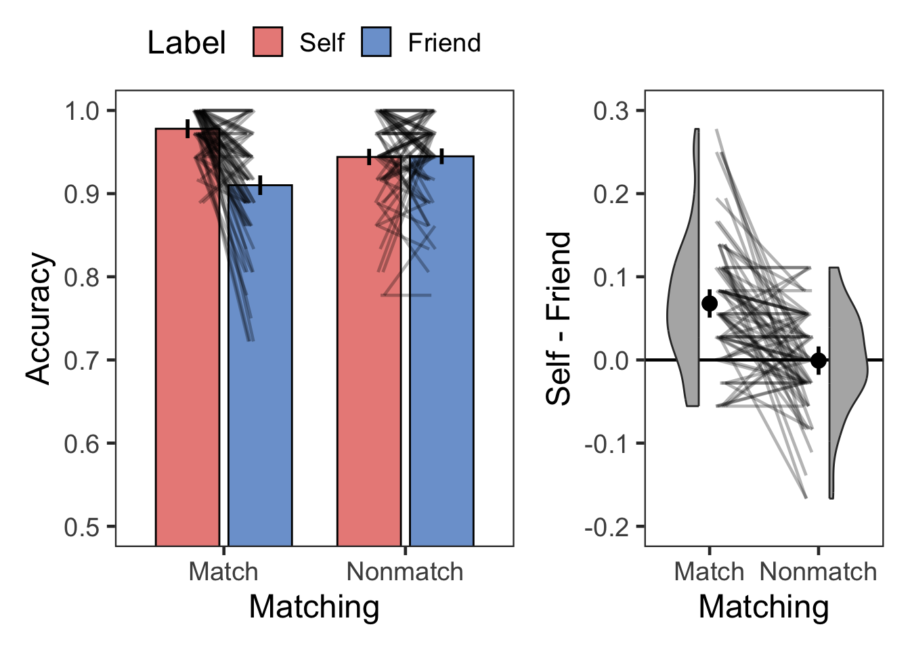
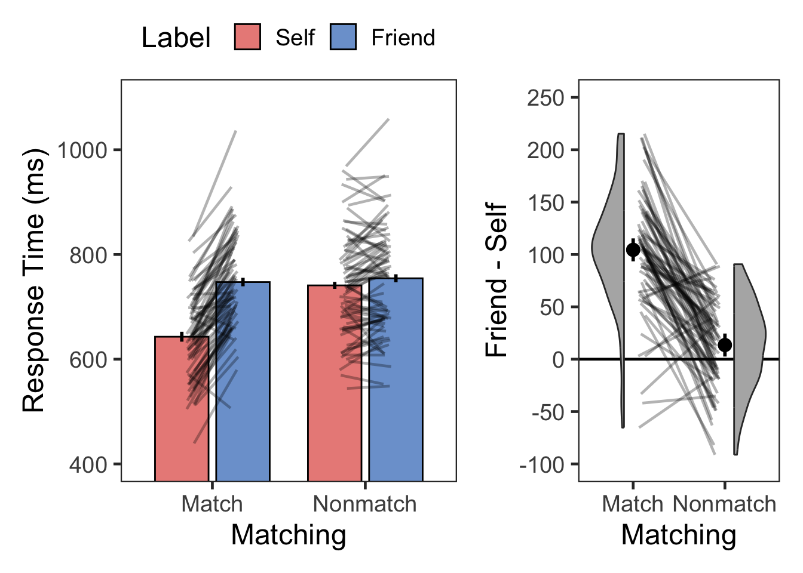
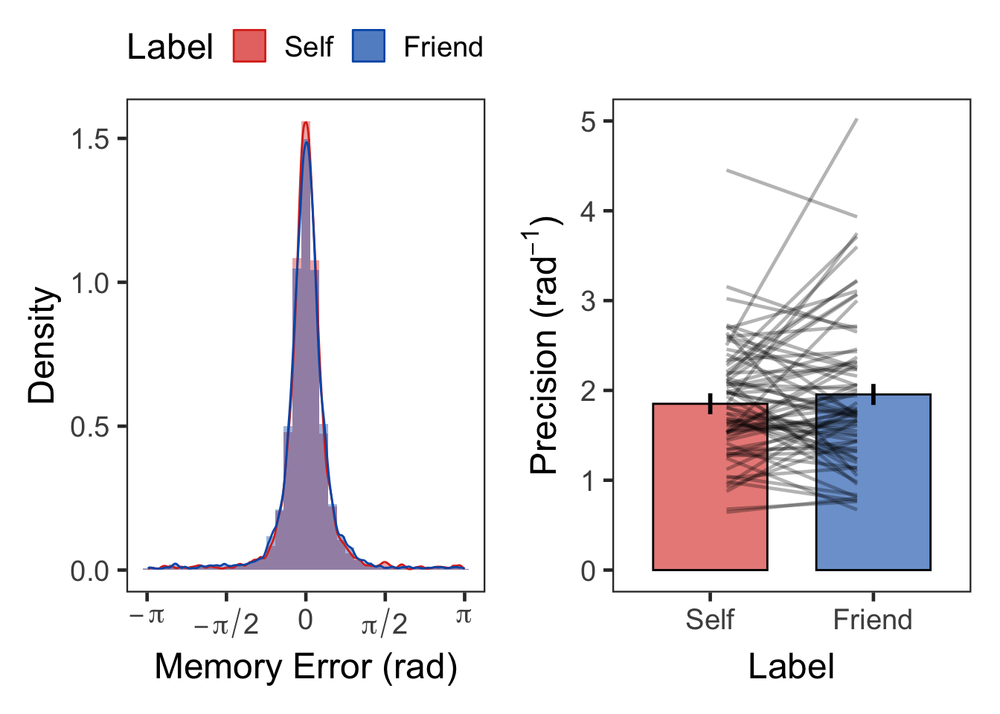
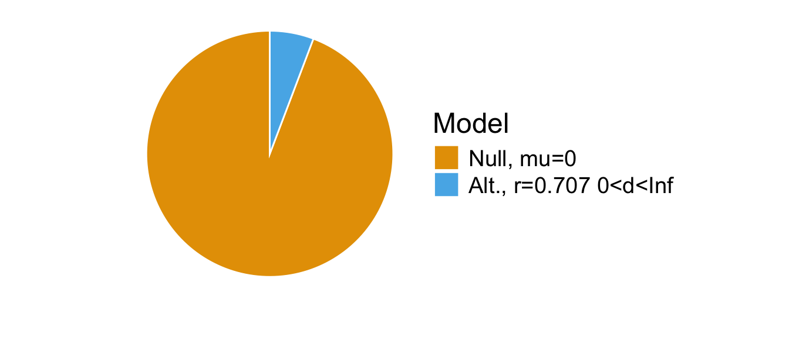
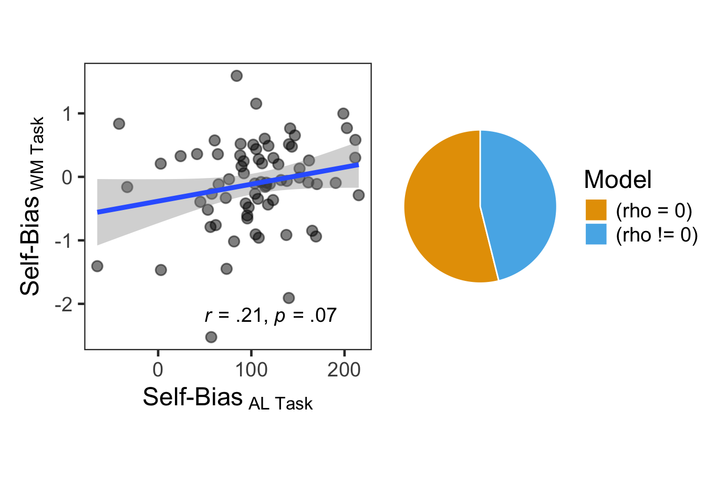

Experiment 2
Self-Priority Effects on Nonspatial Working Memory
Woojeong Lee & Do-Joon Yi
2025-10-01
pacman::p_load(tidyverse, psych, knitr, rstatix, BayesFactor)
pacman::p_load(ggpubr, see, cowplot)
pacman::p_load_gh("thomasp85/patchwork", 'eddjberry/mixturer')
if (!requireNamespace("Rmisc", quietly = TRUE)) install.packages("Rmisc")
if (!requireNamespace("bayestestR", quietly = TRUE)) install.packages("bayestestR")
if (!requireNamespace("magick", quietly = TRUE)) install.packages("magick")
set.seed(1234567) # for reproducibility
options(dplyr.summarise.inform=FALSE) # suppress warning in regards to regrouping
options(knitr.kable.NA = '')
options("scipen" = 100) # https://rfriend.tistory.com/224
nIter <- 1e4 # Monte Carlo simulations for error < 1%. default = 1e4
tOff <- 2.5 # RTtrimming
klippy::klippy()
deg2rad <- function(deg){deg * pi / 180}
# Plot for outlier check
single_raincloud_plot <- function(df, Y, xMin, xMax, xBy, xLab){
df %>% ggplot(aes(x = 1, y = Y)) +
geom_violinhalf(flip = c(1,3), width = 0.5, color = "grey70", fill = "gray70") +
geom_point(aes(0.8, Y), size = 1.5,
color = "grey50", fill = "grey50", alpha = .5,
position = position_jitter(width = 0.15, height = 0)) +
geom_boxplot(width=0.05, alpha = 0.5, outliers = FALSE) +
scale_y_continuous(breaks=seq(xMin,xMax,by=xBy)) +
coord_flip(ylim = c(xMin, xMax), clip = "on") +
labs(y = xLab) +
theme_bw(base_size = 18) +
theme(panel.grid.major = element_blank(),
panel.grid.minor = element_blank(),
axis.title.y = element_blank(),
axis.ticks.y = element_blank(),
axis.text.y = element_blank(),
aspect.ratio = .3)
}
## Plot for results
plotMatchLabel <- function(df, ylabel, ymin, ymax, yby,
OminusS, ymin2, ymax2, yby2) {
names(df)[ncol(df)] <- "DV" # assuming DV on the last column
df.g <- df %>%
Rmisc::summarySEwithin(measurevar = 'DV', idvar = 'SN',
withinvars = c("Matching", "Label"))
df.w <- df %>%
unite("temp", c("Matching", "Label")) %>%
pivot_wider(id_cols = SN, names_from = temp, values_from = DV)
doff <- 0.03
tmp <- runif(nrow(df.w), -doff, doff)
spd1 <- rep(-0.14,nrow(df.w)) + tmp
spd2 <- rep( 0.14,nrow(df.w)) + tmp
F1 <- ggplot() +
geom_bar(data=df.g, aes(x = Matching, y = DV, fill = Label), alpha = .6,
stat="identity", width=0.7, linewidth=0.5, color="black",
position=position_dodge(.8)) +
scale_fill_manual(values=c('#DC3220', '#005AB5'),
labels=c("Self", "Friend")) +
geom_segment(data=df.w, color="black", alpha = 0.3,
aes(x=1+spd1, y=Match_Self, xend=1+spd2, yend=Match_Friend)) +
geom_segment(data=df.w, color="black", alpha = 0.3,
aes(x=2+spd1, y=Nonmatch_Self, xend=2+spd2, yend=Nonmatch_Friend)) +
geom_linerange(data=df.g, aes(x=Matching, ymin=DV-ci, ymax=DV+ci, group=Label),
linewidth=1, position=position_dodge(0.8)) +
labs(x = "Matching", y = ylabel, fill='Label ') +
coord_cartesian(ylim = c(ymin, ymax), clip = "on") +
scale_y_continuous(breaks=seq(ymin, ymax, by = yby)) +
theme_bw(base_size = 18) +
theme(legend.position="top",
legend.spacing.x = unit(0.5, 'lines'),
legend.margin = margin(0, 0, 0, 0),
legend.background = element_blank(),
panel.grid.major = element_blank(),
panel.grid.minor = element_blank())
if (OminusS) { # Boolean: Friend - Self
df2.w <- df.w %>%
mutate(Match = Match_Friend - Match_Self,
Nonmatch = Nonmatch_Friend - Nonmatch_Self) %>%
select(SN, Match, Nonmatch)
} else {
df2.w <- df.w %>%
mutate(Match = Match_Self - Match_Friend,
Nonmatch = Nonmatch_Self - Nonmatch_Friend) %>%
select(SN, Match, Nonmatch)
}
df2 <- df2.w %>%
pivot_longer(cols = c(Match, Nonmatch), names_to = "Matching", values_to = "SPE")
df2.g <- df2 %>%
mutate(Matching = factor(Matching)) %>%
Rmisc::summarySEwithin(measurevar = "SPE", withinvars = "Matching", idvar = "SN")
moff <- 0.1
doff <- 0.05
vpd <- rep(c(1-moff, 2+moff), nrow(df2)/2) # violin position dodge
dpd <- rep(c(1+moff, 2-moff), nrow(df2)/2) + # dot position dodge
rep(runif(nrow(df2)/2, -doff, doff), each=2)
F2 <- cbind(df2, vpd, dpd) %>%
ggplot(aes(x = Matching, y = SPE, group = Matching)) +
geom_pointrange(data=df2.g, aes(x = Matching, ymin = SPE-ci, ymax = SPE+ci),
linewidth = 1, size = 0.5, color = "black") +
geom_point(data=df2.g, aes(x = Matching, y = SPE),
size=3, color = "black", show.legend = FALSE) +
geom_hline(yintercept = 0) +
geom_violinhalf(aes(x = vpd, y = SPE, group = Matching),
flip = c(1,3), width = 0.7, fill = "gray70") +
geom_line(aes(x = dpd, y = SPE, group = SN), color = "black", alpha = 0.3) +
labs(x = "Matching",
y = ifelse (OminusS, # Boolean: Friend - Self
"Friend - Self", "Self - Friend")) +
coord_cartesian(ylim = c(ymin2, ymax2), clip = "on") +
scale_y_continuous(breaks=seq(ymin2, ymax2, by = yby2)) +
theme_bw(base_size = 18) +
theme(panel.grid.major = element_blank(),
panel.grid.minor = element_blank())
F1 + F2 + plot_layout(nrow = 1, widths = c(2, 1.2))
}The current experiment was preregistered on the Open Science Framework. Participants completed an associative learning task followed by a working memory task.
1 Associative Learning Task
The task was almost identical to that in Experiment 1. Each trial presented a red or blue shape with a superimposed social label—“당신” (the Korean word for “You”) or “친구” (the Korean word for “Friend”). Participants were asked to judge whether the color of the shape matched the color that had been associated with the referent of the label (self or friend) prior to the experiment. Participants used both hands to make label-matching responses: half pressed the leftmost button (of a 9-button response box) with the left hand for “Match” and the rightmost button with the right hand for “Nonmatch,” whereas the mapping was reversed for the other half of the participants. Accuracy was computed based on all responses, and response times (RTs) were analyzed only for correct label-matching responses.
1.1 Label-Matching Accuracy
lrn <- read.csv("data/datSPE8VCS2LRN.csv", header = TRUE) %>%
mutate(SN = factor(SN),
Matching = factor(Matching,
levels = c("Match", "Nonmatch"),
labels = c("Match", "Nonmatch")),
Label = factor(Label,
levels = c("Self", "Friend"),
labels = c("Self", "Friend")),
RT = RT * 1000)
str(lrn)
## 'data.frame': 10368 obs. of 7 variables:
## $ SN : Factor w/ 72 levels "1","2","3","4",..: 1 1 1 1 1 1 1 1 1 1 ...
## $ selfColor: chr "red" "red" "red" "red" ...
## $ Matching : Factor w/ 2 levels "Match","Nonmatch": 2 2 1 1 1 2 2 1 2 2 ...
## $ Label : Factor w/ 2 levels "Self","Friend": 2 1 2 2 1 1 1 2 1 2 ...
## $ Response : chr "Nonmatch" "Nonmatch" "Match" "Match" ...
## $ Correct : int 1 1 1 1 1 1 1 1 1 1 ...
## $ RT : num 968 841 878 1300 753 ...
length(unique(lrn$SN))
## [1] 72
table(lrn$SN)
##
## 1 2 3 4 5 6 7 8 9 10 11 12 13 14 15 16 17 18 19 20
## 144 144 144 144 144 144 144 144 144 144 144 144 144 144 144 144 144 144 144 144
## 21 22 23 24 25 26 27 28 29 30 31 32 33 34 35 36 37 38 39 40
## 144 144 144 144 144 144 144 144 144 144 144 144 144 144 144 144 144 144 144 144
## 41 42 43 44 45 46 47 48 49 50 51 52 53 54 55 56 57 58 59 60
## 144 144 144 144 144 144 144 144 144 144 144 144 144 144 144 144 144 144 144 144
## 61 62 63 64 65 66 67 68 69 70 71 72
## 144 144 144 144 144 144 144 144 144 144 144 144
# Accuracy
l.acc <- lrn %>%
group_by(SN, Matching, Label) %>%
summarise(Accuracy = mean(Correct)) %>%
ungroup()
plotMatchLabel(l.acc, "Accuracy", 0.5, 1, .1, FALSE, -.2, .3, .1)
# Descriptive
l.acc %>% group_by(Matching, Label) %>%
get_summary_stats(Accuracy, show = c("mean", "sd")) %>%
kable(digits = 2, format = "simple", caption = "Descriptive summary")| Matching | Label | variable | n | mean | sd |
|---|---|---|---|---|---|
| Match | Self | Accuracy | 72 | 0.98 | 0.03 |
| Match | Friend | Accuracy | 72 | 0.91 | 0.07 |
| Nonmatch | Self | Accuracy | 72 | 0.94 | 0.06 |
| Nonmatch | Friend | Accuracy | 72 | 0.94 | 0.05 |
bias.acc <- l.acc %>%
filter(Matching == "Match") %>%
pivot_wider(id_cols = "SN", names_from = "Label", values_from = "Accuracy") %>%
mutate(selfBias = Self - Friend) %>%
select(SN, selfBias)
bias.acc %>% get_summary_stats(selfBias, show = c("mean", "sd")) %>%
kable(digits = 2, format = "simple", caption = "Match:Self - Match:Friend")| variable | n | mean | sd |
|---|---|---|---|
| selfBias | 72 | 0.07 | 0.08 |
## Bayes factor analysis
## --------------
## [1] Alt., r=0.707 : 57953256 ±0%
##
## Against denominator:
## Null, mu = 0
## ---
## Bayes factor type: BFoneSample, JZSThe Bayes factor indicated that the data were more than 5.795326e+07 times more likely under the alternative hypothesis than under the null hypothesis.
1.2 Label-Matching RT
range(lrn$RT[lrn$Correct==1])
## [1] 313.1731 1491.8638
lrn %>%
filter(Correct == 1) %>%
filter(RT < 200) %>%
summarise(N = n())
## N
## 1 0
lt <- lrn %>%
filter(Correct == 1) %>%
group_by(SN) %>%
nest() %>%
mutate(lbound = map(data, ~mean(.$RT)-tOff*sd(.$RT)),
ubound = map(data, ~mean(.$RT)+tOff*sd(.$RT))) %>%
unnest(c(lbound, ubound)) %>%
unnest(data) %>%
mutate(Outlier = (RT < lbound)|(RT > ubound)) %>%
filter(Outlier == FALSE) %>%
ungroup() %>%
select(SN, Matching, Label, RT)
table(lt$Matching, lt$SN)
##
## 1 2 3 4 5 6 7 8 9 10 11 12 13 14 15 16 17 18 19 20 21 22 23
## Match 69 70 64 69 63 70 70 70 65 68 64 70 68 68 69 67 70 65 68 63 69 63 69
## Nonmatch 72 68 63 64 62 69 71 65 64 64 67 69 69 67 67 69 67 69 70 66 68 60 69
##
## 24 25 26 27 28 29 30 31 32 33 34 35 36 37 38 39 40 41 42 43 44 45 46
## Match 69 65 61 67 69 68 72 69 65 64 67 67 67 67 63 67 69 66 68 70 70 68 62
## Nonmatch 69 59 67 66 68 67 68 70 68 68 71 68 67 66 70 65 67 63 67 68 67 69 56
##
## 47 48 49 50 51 52 53 54 55 56 57 58 59 60 61 62 63 64 65 66 67 68 69
## Match 71 67 69 66 69 68 68 65 70 63 66 69 67 70 65 64 68 61 60 68 61 68 67
## Nonmatch 71 67 67 71 67 66 69 64 69 63 65 70 64 63 70 65 67 54 65 67 64 68 69
##
## 70 71 72
## Match 67 66 67
## Nonmatch 66 66 65
table(lt$Label, lt$SN)
##
## 1 2 3 4 5 6 7 8 9 10 11 12 13 14 15 16 17 18 19 20 21 22 23
## Self 72 68 68 70 62 70 72 67 67 68 66 71 70 70 65 70 69 65 70 69 69 67 71
## Friend 69 70 59 63 63 69 69 68 62 64 65 68 67 65 71 66 68 69 68 60 68 56 67
##
## 24 25 26 27 28 29 30 31 32 33 34 35 36 37 38 39 40 41 42 43 44 45 46
## Self 71 64 69 71 71 65 71 70 69 66 70 68 69 68 68 66 71 68 70 71 69 69 63
## Friend 67 60 59 62 66 70 69 69 64 66 68 67 65 65 65 66 65 61 65 67 68 68 55
##
## 47 48 49 50 51 52 53 54 55 56 57 58 59 60 61 62 63 64 65 66 67 68 69
## Self 71 69 66 69 72 69 71 68 69 65 66 72 62 64 68 67 69 63 67 69 68 70 68
## Friend 71 65 70 68 64 65 66 61 70 61 65 67 69 69 67 62 66 52 58 66 57 66 68
##
## 70 71 72
## Self 69 71 68
## Friend 64 61 64
range(lt$RT)
## [1] 313.1731 1491.8638
tmp <- lt %>%
group_by(SN, Matching, Label) %>%
summarise(n = n()) %>%
ungroup()
range(tmp$n) # check min & max number of trials.
## [1] 25 36
tmp %>%
unite("Cond", Matching:Label) %>%
pivot_wider(id_cols = SN, names_from = Cond, values_from = n) %>%
print(n = Inf) # relatively high accuracy. seems enough number of trials.
## # A tibble: 72 × 5
## SN Match_Self Match_Friend Nonmatch_Self Nonmatch_Friend
## <fct> <int> <int> <int> <int>
## 1 1 36 33 36 36
## 2 2 35 35 33 35
## 3 3 35 29 33 30
## 4 4 36 33 34 30
## 5 5 34 29 28 34
## 6 6 34 36 36 33
## 7 7 36 34 36 35
## 8 8 35 35 32 33
## 9 9 34 31 33 31
## 10 10 34 34 34 30
## 11 11 33 31 33 34
## 12 12 35 35 36 33
## 13 13 35 33 35 34
## 14 14 36 32 34 33
## 15 15 34 35 31 36
## 16 16 35 32 35 34
## 17 17 36 34 33 34
## 18 18 32 33 33 36
## 19 19 34 34 36 34
## 20 20 34 29 35 31
## 21 21 35 34 34 34
## 22 22 35 28 32 28
## 23 23 36 33 35 34
## 24 24 36 33 35 34
## 25 25 33 32 31 28
## 26 26 35 26 34 33
## 27 27 36 31 35 31
## 28 28 35 34 36 32
## 29 29 33 35 32 35
## 30 30 36 36 35 33
## 31 31 36 33 34 36
## 32 32 36 29 33 35
## 33 33 34 30 32 36
## 34 34 34 33 36 35
## 35 35 35 32 33 35
## 36 36 36 31 33 34
## 37 37 35 32 33 33
## 38 38 33 30 35 35
## 39 39 36 31 30 35
## 40 40 36 33 35 32
## 41 41 36 30 32 31
## 42 42 36 32 34 33
## 43 43 36 34 35 33
## 44 44 36 34 33 34
## 45 45 36 32 33 36
## 46 46 36 26 27 29
## 47 47 35 36 36 35
## 48 48 34 33 35 32
## 49 49 33 36 33 34
## 50 50 34 32 35 36
## 51 51 36 33 36 31
## 52 52 36 32 33 33
## 53 53 36 32 35 34
## 54 54 34 31 34 30
## 55 55 35 35 34 35
## 56 56 34 29 31 32
## 57 57 35 31 31 34
## 58 58 36 33 36 34
## 59 59 32 35 30 34
## 60 60 36 34 28 35
## 61 61 32 33 36 34
## 62 62 36 28 31 34
## 63 63 36 32 33 34
## 64 64 35 26 28 26
## 65 65 34 26 33 32
## 66 66 35 33 34 33
## 67 67 36 25 32 32
## 68 68 36 32 34 34
## 69 69 34 33 34 35
## 70 70 35 32 34 32
## 71 71 36 30 35 31
## 72 72 35 32 33 32
( pTrmd <- 100*(sum(lrn$Correct) - nrow(lt))/sum(lrn$Correct) ) # proportion of trimmed RTs
## [1] 1.777324Among correct responses, no trials had an RT faster than 200 ms. Correct RTs exceeding ±2.5 standard deviations from the subject-specific mean were excluded from analysis, accounting for 1.78% of the data.
# RT
l.rt <- lt %>%
group_by(SN, Matching, Label) %>%
summarise(RT = mean(RT)) %>%
ungroup()
plotMatchLabel(l.rt, "Response Time (ms)", 400, 1100, 200, TRUE, -100, 250, 50)
# Descriptive
l.rt %>% group_by(Matching, Label) %>%
get_summary_stats(RT, show = c("mean", "sd")) %>%
kable(digits = 0, format = "simple", caption = "Descriptive summary")| Matching | Label | variable | n | mean | sd |
|---|---|---|---|---|---|
| Match | Self | RT | 72 | 643 | 82 |
| Match | Friend | RT | 72 | 747 | 91 |
| Nonmatch | Self | RT | 72 | 741 | 97 |
| Nonmatch | Friend | RT | 72 | 754 | 102 |
bias.rt <- l.rt %>%
filter(Matching == "Match") %>%
pivot_wider(id_cols = "SN", names_from = "Label", values_from = "RT") %>%
mutate(selfBias = Friend - Self) %>%
select(SN, selfBias)
bias.rt %>% get_summary_stats(selfBias, show = c("mean", "sd")) %>%
kable(digits = 2, format = "simple", caption = "Match:Friend - Match:Self")| variable | n | mean | sd |
|---|---|---|---|
| selfBias | 72 | 104.39 | 55.95 |
## Bayes factor analysis
## --------------
## [1] Alt., r=0.707 : 7063649214112056999936 ±0%
##
## Against denominator:
## Null, mu = 0
## ---
## Bayes factor type: BFoneSample, JZSThe Bayes factor indicated that the data were more than 7.063649e+21 times more likely under the alternative hypothesis than under the null hypothesis.
2 Working Memory Task
At the beginning of each trial, a blue and a red object appeared on the screen. Participants were required to briefly hold the colors and shapes of the objects in working memory. After a 2-second delay, a social label and a color wheel appeared along with a mouse cursor. Participants were asked to identify the shape of the object that had been presented in the color associated with the referent of the label.

We measured the memory error (in a whole number from -179° to 180°) by calculating the angular deviation of a response from the ‘target’ shape cued by a label in each trial. As in Yin & Chen (2024), WM precision is then calculated separately for each participant and condition as the reciprocal of the standard deviation of memory errors across trials. The estimation of WM precision is based on the formula described in prior works (Bays et al., 2009).
2.1 Precision
2.1.1 Descriptive Stats
tst <- read.csv("data/datSPE8VCS2TST.csv") %>%
mutate(SN = factor(SN),
Label = factor(Label,
levels = c("Self", "Friend"),
labels = c("Self", "Friend"))) %>%
mutate(ErrorRad = deg2rad(Error))
str(tst)
## 'data.frame': 10368 obs. of 18 variables:
## $ SN : Factor w/ 72 levels "1","2","3","4",..: 1 1 1 1 1 1 1 1 1 1 ...
## $ selfColor : chr "red" "red" "red" "red" ...
## $ Trial : int 1 2 3 4 5 6 7 8 9 10 ...
## $ selfSide : chr "left" "left" "right" "left" ...
## $ otherSide : chr "right" "right" "left" "right" ...
## $ selfID : int 314 218 4 245 87 65 96 291 243 274 ...
## $ otherID : int 20 107 184 332 153 221 360 358 33 201 ...
## $ Label : Factor w/ 2 levels "Self","Friend": 1 2 2 1 1 2 2 2 2 1 ...
## $ TrgSide : int 1 2 1 1 2 2 2 1 2 1 ...
## $ TrgColor : chr "red" "blue" "blue" "red" ...
## $ wheelShift: int 339 322 55 215 310 281 103 275 352 133 ...
## $ TrgLoc : int 293 69 239 100 37 142 103 273 25 47 ...
## $ TrgID : int 314 107 184 245 87 221 360 358 33 274 ...
## $ RspLoc : int 299 65 240 112 46 139 93 264 13 71 ...
## $ RspID : int 320 103 185 257 96 218 350 349 21 298 ...
## $ Error : int 6 -4 1 12 9 -3 -10 -9 -12 24 ...
## $ RT : num 4.9 6.54 6.27 6.65 7.06 ...
## $ ErrorRad : num 0.1047 -0.0698 0.0175 0.2094 0.1571 ...
length(unique(tst$SN))
## [1] 72
table(tst$selfColor, tst$SN)
##
## 1 2 3 4 5 6 7 8 9 10 11 12 13 14 15 16 17 18
## blue 0 144 0 144 0 144 0 144 0 144 0 144 0 144 0 144 0 144
## red 144 0 144 0 144 0 144 0 144 0 144 0 144 0 144 0 144 0
##
## 19 20 21 22 23 24 25 26 27 28 29 30 31 32 33 34 35 36
## blue 0 144 0 144 0 144 0 144 0 144 0 144 0 144 0 144 0 144
## red 144 0 144 0 144 0 144 0 144 0 144 0 144 0 144 0 144 0
##
## 37 38 39 40 41 42 43 44 45 46 47 48 49 50 51 52 53 54
## blue 0 144 0 144 0 144 0 144 0 144 0 144 0 144 0 144 0 144
## red 144 0 144 0 144 0 144 0 144 0 144 0 144 0 144 0 144 0
##
## 55 56 57 58 59 60 61 62 63 64 65 66 67 68 69 70 71 72
## blue 0 144 0 144 0 144 0 144 0 144 0 144 0 144 0 144 0 144
## red 144 0 144 0 144 0 144 0 144 0 144 0 144 0 144 0 144 0
range(tst$Error)
## [1] -179 180
range(deg2rad(tst$Error))
## [1] -3.124139 3.141593
headTail(tst)
## SN selfColor Trial selfSide otherSide selfID otherID Label TrgSide
## 1 1 red 1 left right 314 20 Self 1
## 2 1 red 2 left right 218 107 Friend 2
## 3 1 red 3 right left 4 184 Friend 1
## 4 1 red 4 left right 245 332 Self 1
## ... <NA> <NA> ... <NA> <NA> ... ... <NA> ...
## 10365 72 blue 141 right left 110 74 Friend 1
## 10366 72 blue 142 right left 177 52 Self 2
## 10367 72 blue 143 right left 281 143 Self 2
## 10368 72 blue 144 left right 86 222 Self 1
## TrgColor wheelShift TrgLoc TrgID RspLoc RspID Error RT ErrorRad
## 1 red 339 293 314 299 320 6 4.9 0.1
## 2 blue 322 69 107 65 103 -4 6.54 -0.07
## 3 blue 55 239 184 240 185 1 6.27 0.02
## 4 red 215 100 245 112 257 12 6.65 0.21
## ... <NA> ... ... ... ... ... ... ... ...
## 10365 red 33 107 74 105 72 -2 3.88 -0.03
## 10366 blue 318 135 177 155 197 20 5.46 0.35
## 10367 blue 174 95 281 99 285 4 7.5 0.07
## 10368 blue 11 97 86 98 87 1 3.99 0.02
# # Error는 아래 두 가지 방식으로 변인을 조합하여 재현할 수 있다.
# tst %>% mutate(tmp1 = (RspID - TrgID) %% 360,
# tmp2 = ifelse(tmp1 > 180, tmp1-360, tmp1),
# tmp3 = 1- (Error==tmp2)) %>%
# summarise(sumError = sum(tmp3))
#
# tst %>% mutate(tmp1 = (RspLoc - TrgLoc) %% 360,
# tmp2 = ifelse(tmp1 > 180, tmp1-360, tmp1),
# tmp3 = 1- (Error==tmp2)) %>%
# summarise(sumError = sum(tmp3))
# Outlier Detection on precision
F3 <- tst %>% select(Label, ErrorRad) %>%
ggplot() +
geom_histogram(mapping = aes(x = ErrorRad,
y = after_stat(density),
fill = Label),
position = 'identity', binwidth = pi/18, alpha = 0.4) +
geom_density(mapping = aes(x = ErrorRad, color = Label),
alpha = 0.5, linewidth = 0.5) +
scale_x_continuous(breaks = c(-pi, -pi/2, 0, pi/2, pi),
label = c(expression(-pi), expression(-pi/2),
0, expression(pi/2), expression(pi))) +
labs(x = "Memory Error (rad)", y = "Density") +
# facet_grid(. ~ Label) +
scale_fill_manual(values=c("#DC3220", "#005AB5")) +
scale_color_manual(values=c("#DC3220", "#005AB5")) +
theme_bw(base_size = 18) +
theme(legend.position="top",
legend.spacing.x = unit(0.5, 'lines'),
legend.margin = margin(0, 0, 0, 0),
legend.background = element_blank(),
strip.background = element_blank(),
panel.grid.major = element_blank(),
panel.grid.minor = element_blank())
t1 <- tst %>%
group_by(SN, Label) %>%
group_modify( ~ bays_2009_error(.$ErrorRad)) %>%
ungroup() %>%
rename(Precision = precision)
headTail(t1)
## SN Label Precision bias
## 1 1 Self 2.64 0
## 2 1 Friend 1.05 0.05
## 3 2 Self 2.34 -0.05
## 4 2 Friend 2.43 -0.01
## 5 <NA> <NA> ... ...
## 6 71 Self 2.04 0.13
## 7 71 Friend 2.32 0.14
## 8 72 Self 1.46 0.1
## 9 72 Friend 2.07 0.03
t1 %>% print(n = Inf)
## # A tibble: 144 × 4
## SN Label Precision bias
## <fct> <fct> <dbl> <dbl>
## 1 1 Self 2.64 -0.00418
## 2 1 Friend 1.05 0.0525
## 3 2 Self 2.34 -0.0461
## 4 2 Friend 2.43 -0.00570
## 5 3 Self 1.34 0.0500
## 6 3 Friend 1.61 0.000374
## 7 4 Self 2.10 -0.0371
## 8 4 Friend 1.75 -0.00726
## 9 5 Self 1.29 0.0683
## 10 5 Friend 1.43 0.0195
## 11 6 Self 3.16 -0.00786
## 12 6 Friend 2.65 0.0660
## 13 7 Self 1.62 0.0111
## 14 7 Friend 1.49 -0.00115
## 15 8 Self 1.93 -0.0178
## 16 8 Friend 1.10 -0.0117
## 17 9 Self 1.26 0.00847
## 18 9 Friend 1.74 -0.0283
## 19 10 Self 1.81 0.0390
## 20 10 Friend 1.23 0.0668
## 21 11 Self 1.30 0.0596
## 22 11 Friend 1.14 0.0569
## 23 12 Self 0.876 0.0738
## 24 12 Friend 1.66 0.115
## 25 13 Self 1.68 0.0485
## 26 13 Friend 1.44 -0.000924
## 27 14 Self 0.984 0.0382
## 28 14 Friend 0.770 0.131
## 29 15 Self 1.53 0.0461
## 30 15 Friend 3.00 -0.0445
## 31 16 Self 1.03 0.000253
## 32 16 Friend 1.14 -0.0265
## 33 17 Self 3.02 -0.0213
## 34 17 Friend 2.70 0.0000167
## 35 18 Self 2.50 0.0320
## 36 18 Friend 5.03 0.0359
## 37 19 Self 2.59 0.0456
## 38 19 Friend 2.24 -0.0136
## 39 20 Self 1.52 0.0148
## 40 20 Friend 2.37 0.0367
## 41 21 Self 1.66 -0.0353
## 42 21 Friend 1.32 -0.0808
## 43 22 Self 1.81 0.0764
## 44 22 Friend 1.50 0.0459
## 45 23 Self 2.60 0.0175
## 46 23 Friend 2.72 0.0668
## 47 24 Self 1.97 0.0224
## 48 24 Friend 1.69 -0.00311
## 49 25 Self 2.11 0.0487
## 50 25 Friend 0.956 0.121
## 51 26 Self 1.41 0.0332
## 52 26 Friend 0.811 0.0847
## 53 27 Self 2.57 0.0571
## 54 27 Friend 2.05 -0.0837
## 55 28 Self 0.644 -0.153
## 56 28 Friend 0.801 0.0801
## 57 29 Self 2.15 0.000375
## 58 29 Friend 3.60 0.0341
## 59 30 Self 2.31 -0.0228
## 60 30 Friend 3.71 0.00463
## 61 31 Self 1.75 0.0469
## 62 31 Friend 1.55 -0.0370
## 63 32 Self 2.17 0.0406
## 64 32 Friend 3.07 0.0739
## 65 33 Self 1.84 0.0277
## 66 33 Friend 3.75 0.00995
## 67 34 Self 2.07 -0.0240
## 68 34 Friend 2.01 -0.0918
## 69 35 Self 1.75 0.0165
## 70 35 Friend 0.982 0.155
## 71 36 Self 1.35 -0.0794
## 72 36 Friend 1.36 -0.0318
## 73 37 Self 2.11 -0.00773
## 74 37 Friend 3.07 -0.0387
## 75 38 Self 2.07 0.0203
## 76 38 Friend 2.46 -0.0574
## 77 39 Self 1.98 -0.0196
## 78 39 Friend 2.31 -0.0616
## 79 40 Self 2.69 0.00118
## 80 40 Friend 3.11 -0.0170
## 81 41 Self 2.73 -0.0415
## 82 41 Friend 2.25 -0.0236
## 83 42 Self 1.98 0.0980
## 84 42 Friend 1.72 0.0795
## 85 43 Self 1.12 0.0505
## 86 43 Friend 1.77 0.0938
## 87 44 Self 1.53 -0.0519
## 88 44 Friend 2.29 0.00571
## 89 45 Self 1.44 -0.0325
## 90 45 Friend 1.79 -0.0348
## 91 46 Self 0.950 -0.0513
## 92 46 Friend 1.87 0.00413
## 93 47 Self 1.69 0.0274
## 94 47 Friend 1.20 0.0896
## 95 48 Self 1.83 0.0571
## 96 48 Friend 1.94 0.00955
## 97 49 Self 0.922 -0.0153
## 98 49 Friend 1.44 0.0523
## 99 50 Self 1.50 0.00483
## 100 50 Friend 1.77 -0.154
## 101 51 Self 2.46 0.0605
## 102 51 Friend 2.16 0.0387
## 103 52 Self 1.97 -0.0154
## 104 52 Friend 2.06 -0.0516
## 105 53 Self 2.72 -0.0192
## 106 53 Friend 1.72 0.0373
## 107 54 Self 2.21 0.0960
## 108 54 Friend 3.23 0.0672
## 109 55 Self 2.14 -0.0843
## 110 55 Friend 1.70 -0.0504
## 111 56 Self 2.00 0.0162
## 112 56 Friend 1.24 0.000818
## 113 57 Self 1.27 0.0364
## 114 57 Friend 1.32 0.0282
## 115 58 Self 4.45 -0.0216
## 116 58 Friend 3.93 0.0175
## 117 59 Self 1.64 0.0310
## 118 59 Friend 1.80 0.0470
## 119 60 Self 1.54 0.0161
## 120 60 Friend 1.63 0.0735
## 121 61 Self 1.04 0.0172
## 122 61 Friend 0.836 -0.00979
## 123 62 Self 1.60 0.0454
## 124 62 Friend 1.67 -0.0297
## 125 63 Self 2.28 0.0550
## 126 63 Friend 3.22 0.0268
## 127 64 Self 1.24 0.0596
## 128 64 Friend 0.672 -0.0949
## 129 65 Self 1.63 0.0314
## 130 65 Friend 2.00 0.0836
## 131 66 Self 2.40 0.00217
## 132 66 Friend 1.75 -0.0496
## 133 67 Self 0.678 0.0531
## 134 67 Friend 0.764 -0.0974
## 135 68 Self 2.20 -0.0134
## 136 68 Friend 2.23 -0.0567
## 137 69 Self 1.56 0.0392
## 138 69 Friend 1.66 0.0303
## 139 70 Self 1.53 0.0565
## 140 70 Friend 1.97 0.0126
## 141 71 Self 2.04 0.134
## 142 71 Friend 2.32 0.140
## 143 72 Self 1.46 0.104
## 144 72 Friend 2.07 0.0303
t1.g <- t1 %>%
Rmisc::summarySEwithin(measurevar = 'Precision', idvar = 'SN',
withinvars = "Label")
t1.w <- t1 %>%
pivot_wider(id_cols = SN, names_from = Label, values_from = Precision)
pd <- rep(c(1.1, 1.9), 72)
F4 <- ggplot() +
geom_bar(data=t1.g, aes(x = Label, y = Precision, fill = Label), alpha = .6,
stat="identity", width=0.7, linewidth=0.5, color="black") +
# geom_point(data=cbind(t1, pd), aes(x = pd, y = Precision, group = Label),
# color="gray80", alpha=0.5, size=1.8) +
geom_segment(data=t1.w, color="black", alpha=0.3,
aes(x=1+.1, y=Self, xend=2-.1, yend=Friend)) +
geom_linerange(data=t1.g, aes(x=Label, ymin=Precision-ci, ymax=Precision+ci, group=Label),
linewidth=1) +
# geom_point(data=t1.g, aes(x = Label, y = Precision),
# size=3, color = "black", show.legend = FALSE) +
scale_fill_manual(values=c('#DC3220', '#005AB5'),
labels=c("Self", "Friend")) +
labs(x = "Label", y = expression("Precision (" * rad^{-1} * ")")) +
coord_cartesian(ylim = c(0, 5), clip = "on") +
scale_y_continuous(breaks=seq(0, 5, by = 1)) +
theme_bw(base_size = 18) +
theme(legend.position= "none",
panel.grid.major = element_blank(),
panel.grid.minor = element_blank())
# , position = position_nudge(x = .1, y = 0)
F3 + F4 + plot_layout(nrow = 1, widths = c(1, 1))
# Descriptive
t1 %>% group_by(Label) %>%
get_summary_stats(Precision, show = c("mean", "sd")) %>%
kable(digits = 2, format = "simple", caption = "Descriptive summary")| Label | variable | n | mean | sd |
|---|---|---|---|---|
| Self | Precision | 72 | 1.85 | 0.64 |
| Friend | Precision | 72 | 1.96 | 0.85 |
2.1.2 Bayes Factor
## Bayes factor analysis
## --------------
## [1] Alt., r=0.707 0<d<Inf : 0.06099351 ±0%
## [2] Alt., r=0.707 !(0<d<Inf) : 0.4880014 ±0%
##
## Against denominator:
## Null, mu = 0
## ---
## Bayes factor type: BFoneSample, JZS## Bayes factor analysis
## --------------
## [1] Null, mu=0 : 16.39519 ±0%
##
## Against denominator:
## Alternative, r = 0.707, mu =/= 0 0<d<Inf
## ---
## Bayes factor type: BFoneSample, JZSThe Bayes factor indicated that the data were more than 16.395187 times more likely under the null hypothesis than under the directional alaternative hypothesis.
plot(bayestestR::bayesfactor_models(bf1[1])) +
scale_fill_pizza() +
scale_fill_manual(values=c('#E69F00', '#56B4E9')) +
theme(text = element_text(size = 18))
## Scale for fill is already present.
## Adding another scale for fill, which will replace the existing scale.
3 Correlation
Self-bias were computed separately for label-matching RTs in the associative learning task and for precision in the working memory task.
For label-matching RTs, self-bias was defined as the difference between the self and friend conditions on match trials, following prior research (Yin et al., 2019). For WM precision, it was defined as the difference between the self and friend conditions.
A Pearson correlation was then calculated between the two self-bias measures.
lrn.matching <- l.rt %>%
filter(Matching == "Match") %>%
pivot_wider(id_cols = SN, names_from = Label, values_from = RT) %>%
mutate(lrnLabel = Friend - Self) %>%
select(SN, lrnLabel)
tst.precision <- t1 %>%
pivot_wider(id_cols = SN, names_from = Label, values_from = Precision) %>%
mutate(wmShape = Self - Friend) %>%
select(SN, wmShape)
spe.effects <- full_join(
lrn.matching, tst.precision, by = 'SN')
# spe.effects %>% print(n = Inf)# https://cran.r-project.org/web/packages/BayesFactor/vignettes/manual.html#lincor
bf2 <- correlationBF(x = spe.effects$lrnLabel,
y = spe.effects$wmShape, rscale = 0.707)
bf2## Bayes factor analysis
## --------------
## [1] Alt., r=0.707 : 0.8554105 ±0%
##
## Against denominator:
## Null, rho = 0
## ---
## Bayes factor type: BFcorrelation, Jeffreys-beta*The Bayes factor indicated that the data were more than 1.1690293 times more likely under the null hypothesis than under the directional alaternative hypothesis.
# cor.test(x = spe.effects$lrnLabel, y = spe.effects$wmShape)
spe.effects %>% cor_test(lrnLabel, wmShape) %>%
mutate("95% CI" = paste0("[", round(conf.low, digits = 3), ", ",
round(conf.high, digits = 3), "]")) %>%
select(var1, var2, method, cor, '95% CI', statistic, p) %>%
rename(Variable1 = var1, Variable2 = var2, r = cor) %>%
kable(digits = 3, format = "simple", align = "llrrrrr", caption = "Correlation")| Variable1 | Variable2 | method | r | 95% CI | statistic | p |
|---|---|---|---|---|---|---|
| lrnLabel | wmShape | Pearson | 0.21 | [-0.02, 0.423] | 1.821 | 0.073 |
bf2 %>% bayestestR::describe_posterior()
## Summary of Posterior Distribution
##
## Parameter | Median | 95% CI | pd | ROPE | % in ROPE | BF | Prior
## -----------------------------------------------------------------------------------------------------
## rho | 0.20 | [-0.02, 0.40] | 96.20% | [-0.05, 0.05] | 7.16% | 0.855 | Beta (1.41 +- 1.41)
C1 <- ggplot(spe.effects, aes(x=lrnLabel, y=wmShape)) +
geom_point(size = 3, alpha = 0.5) +
geom_smooth(method=lm, formula = y ~ x) +
labs(x = expression(paste("Self-Bias" [" AL Task"])),
y = expression(paste("Self-Bias" [" WM Task"]))) +
theme_bw(base_size = 18) +
theme(panel.grid.major = element_blank(),
panel.grid.minor = element_blank(),
aspect.ratio = 1) +
annotate(geom = "text", x = 50, y = -2.2, hjust = 0, size = 5,
label = "paste(italic(r), \" = .21, \", italic(p), \" = .07\")",
parse = TRUE)
C2 <- plot(bayestestR::bayesfactor_models(bf2)) +
scale_fill_pizza() +
scale_fill_manual(values=c('#E69F00', '#56B4E9')) +
theme(text = element_text(size = 18))
## Scale for fill is already present.
## Adding another scale for fill, which will replace the existing scale.
C1 + C2 + plot_layout(nrow = 1, widths = c(1.5, 1))
4 Session Info
sessionInfo()
## R version 4.5.1 (2025-06-13)
## Platform: aarch64-apple-darwin20
## Running under: macOS Tahoe 26.0.1
##
## Matrix products: default
## BLAS: /Library/Frameworks/R.framework/Versions/4.5-arm64/Resources/lib/libRblas.0.dylib
## LAPACK: /Library/Frameworks/R.framework/Versions/4.5-arm64/Resources/lib/libRlapack.dylib; LAPACK version 3.12.1
##
## locale:
## [1] en_US.UTF-8/en_US.UTF-8/en_US.UTF-8/C/en_US.UTF-8/en_US.UTF-8
##
## time zone: Asia/Seoul
## tzcode source: internal
##
## attached base packages:
## [1] stats graphics grDevices utils datasets methods base
##
## other attached packages:
## [1] mixturer_0.1.0 patchwork_1.3.2 cowplot_1.2.0
## [4] see_0.12.0 ggpubr_0.6.1 BayesFactor_0.9.12-4.7
## [7] Matrix_1.7-4 coda_0.19-4.1 rstatix_0.7.2
## [10] knitr_1.50 psych_2.5.6 lubridate_1.9.4
## [13] forcats_1.0.1 stringr_1.5.2 dplyr_1.1.4
## [16] purrr_1.1.0 readr_2.1.5 tidyr_1.3.1
## [19] tibble_3.3.0 ggplot2_4.0.0 tidyverse_2.0.0
##
## loaded via a namespace (and not attached):
## [1] gtable_0.3.6 bayestestR_0.17.0 xfun_0.53 bslib_0.9.0
## [5] caTools_1.18.3 insight_1.4.2 lattice_0.22-7 tzdb_0.5.0
## [9] bitops_1.0-9 vctrs_0.6.5 tools_4.5.1 generics_0.1.4
## [13] datawizard_1.2.0 parallel_4.5.1 klippy_0.0.0.9500 pacman_0.5.1
## [17] pkgconfig_2.0.3 RColorBrewer_1.1-3 S7_0.2.0 assertthat_0.2.1
## [21] lifecycle_1.0.4 compiler_4.5.1 farver_2.1.2 MatrixModels_0.5-4
## [25] mnormt_2.1.1 carData_3.0-5 htmltools_0.5.8.1 sass_0.4.10
## [29] yaml_2.3.10 Formula_1.2-5 pillar_1.11.1 car_3.1-3
## [33] jquerylib_0.1.4 cachem_1.1.0 magick_2.9.0 abind_1.4-8
## [37] nlme_3.1-168 tidyselect_1.2.1 digest_0.6.37 mvtnorm_1.3-3
## [41] stringi_1.8.7 splines_4.5.1 labeling_0.4.3 fastmap_1.2.0
## [45] grid_4.5.1 cli_3.6.5 magrittr_2.0.4 Rmisc_1.5.1
## [49] utf8_1.2.6 broom_1.0.10 withr_3.0.2 scales_1.4.0
## [53] backports_1.5.0 timechange_0.3.0 rmarkdown_2.30 ggsignif_0.6.4
## [57] hms_1.1.3 pbapply_1.7-4 evaluate_1.0.5 mgcv_1.9-3
## [61] rlang_1.1.6 Rcpp_1.1.0 glue_1.8.0 rstudioapi_0.17.1
## [65] jsonlite_2.0.0 plyr_1.8.9 R6_2.6.1Copyright © 2025 CogNIPS. All rights reserved.